import numpy as np
import graphviz as gvModul 9 Struktur Data: Heap Tree, AVL/Balance Tree
Kembali ke Struktur Data (dengan Python)
Seperti biasa, kita perlu numpy untuk fitur array dan perlu graphviz untuk visualisasi:
Kali ini, kita juga memerlukan kode dari beberapa modul sebelumnya, terlampir di bagian Lampiran di akhir modul ini.
Implementasi Heap Tree dengan array
Heap tree adalah sejenis binary tree dengan beberapa sifat tambahan tertentu. Heap tree terbagi lagi menjadi dua jenis, yaitu max heap dan min heap.
Max heap adalah binary tree dengan sifat tambahan berikut:
- merupakan tree yang complete (terkadang disebut almost complete), yaitu tiap level (kecuali level terakhir) harus terisi penuh, sedangkan pengisian node di level terakhir harus dari paling kiri.
- (Max Heap Property) Untuk tiap node, nilai data yang tersimpan di node tersebut harus lebih besar daripada (atau sama dengan) nilai data yang tersimpan di tiap child nya.
Dengan demikian, pada max heap, data dengan nilai terbesar ada di root.
Min heap adalah binary tree dengan sifat tambahan berikut:
- merupakan tree yang complete (terkadang disebut almost complete)
- (Min Heap Property) Untuk tiap node, nilai data yang tersimpan di node tersebut harus lebih kecil daripada (atau sama dengan) nilai data yang tersimpan di tiap child nya.
Dengan demikian, pada min heap, data dengan nilai terkecil ada di root.
Beberapa hal lain tentang heap tree: * Ketika membahas deletion, yang dihapus sudah pasti root, dan nilai yang dihapus juga di-return (seperti operasi pop di stack). * Insertion selalu dilakukan di level paling dalam, tepat di sebelah kanan dari node yang sudah ada (agar tree tetap beersifat complete).
Selama berurusan dengan heap tree, ada (sekumpulan) operasi bernama heapify, yang tujuannya adalah memastikan bahwa heap tree memang memenuhi sifat max/min heap property. Beberapa variasi heapify adalah: * bottom-up: dimulai dari suatu leaf node yang ditentukan, periksa dengan parentnya. Kemudian, periksa parent tersebut dengan parent dari parent tersebut. Terus ke atas hingga mencapai root. * top-down: dimulai dari root, - untuk max heap: periksa dengan yang terbesar di antara semua child nya. Kemudian, periksa child tersebut dengan yang terbesar di antara semua child nya. Terus ke bawah, berhenti ketika sudah mencapai suatu leaf node. - untuk min heap: periksa dengan yang terkecil di antara semua child nya. Kemudian, periksa child tersebut dengan yang terkecil di antara semua child nya. Terus ke bawah, berhenti ketika sudah mencapai suatu leaf node. * heapify all: periksa tiap node dengan parentnya, dimulai dari level terdalam, dimulai dari node paling kanan. Lanjut ke tiap node yang ada di sebelah kirinya, hingga level tersebut sudah diperiksa semua. Kemudian, lanjut ke level di atasnya, dimulai dari node yang paling kanan. Lanjut terus hingga mencapai root.
Pada heap tree, operasi insertion selalu diikuti dengan heapify yang bottom-up, dan operasi deletion selalu diikuti dengan heapify yang top-down.
Apabila diberikan sembarang binary tree, di antara ketiga variasi di atas, hanya heapify all yang menjamin binary tree berubah menjadi heap tree. Namun, apabila diberikan sembarang heap tree, operasi insertion dan deletion yang dilakukan (masing-masing diikuti heapify yang bottom-up atau top-down) akan tetap menjaga sifatnya sebagai heap tree, meskipun tidak dilakukan heapify all sama sekali.
Kalau ingin mengubah sembarang binary tree menjadi heap tree, kami menyediakan method bernama completify untuk membuat binary tree tersebut menjadi complete, yang kemudian bisa diikuti dengan penggunaan heapify all.
Kita akan mengimplementasikan heap tree dengan array. Karena heap tree adalah sejenis binary tree, kita bisa membuat class ArrayMaxHeap dan class ArrayMinHeap yang sama-sama meng-inherit dari class ArrayBintree dari Modul 8.
Implementasi Max Heap
class ArrayMaxHeap(ArrayBintree):
def __init__(self, dtype, height, emptydata=-9999):
# menggunakan __init__ dari ArrayBintree,
# melalui super() yaitu parent class
super().__init__(dtype, height, emptydata)
# atribut tambahan: banyaknya node yang sudah ada
self.n_nodes = 0
# semua method dari ArrayBintree otomatis sudah terdefinisi
# Memeriksa apakah dua nilai (parent, child) memenuhi max heap property
def is_correct_parent_child_data(self, parent_data, child_data):
if (parent_data >= child_data):
return True
else:
return False
# Membuat binary tree menjadi complete (atau almost complete)
# Idenya, tiap elemen yang bukan "data kosong" harus didempetkan ke kiri
def completify(self):
# Sangat mirip dengan insertion sort, hanya saja syaratnya yang beda
for i in range(self.array_size): # i = 0, 1, 2, ..., n-1
for j in range(i, 0, -1): # j = i, i-1, ..., 2, 1
if ((self.array[j] != self.emptydata)
and (self.array[j-1] == self.emptydata)):
self.array[j-1] = self.array[j]
self.array[j] = self.emptydata
# Setelah selesai, tentukan nilai n_nodes
i = 0
while (i < self.array_size) and (self.array[i] != self.emptydata):
i += 1
self.n_nodes = i
# Pastikan, dari leaf tertentu ke atas, bahwa heap tree memang memenuhi
# heap property
def heapify_bottomup(self, child_idx):
if child_idx > 0:
parent_idx = self.get_parent_idx(child_idx)
if not (self.is_correct_parent_child_data(
self.array[parent_idx], self.array[child_idx]
)): # Jika tidak memenuhi heap property, tukar
temp = self.array[parent_idx]
self.array[parent_idx] = self.array[child_idx]
self.array[child_idx] = temp
# heapify parent nya
self.heapify_bottomup(parent_idx)
def insert(self, newdata):
if self.n_nodes == self.array_size:
print("Error insert: array heap sudah penuh")
else:
self.array[self.n_nodes] = newdata
self.heapify_bottomup(self.n_nodes)
self.n_nodes += 1
# Pastikan, dari atas ke bawah, bahwa heap tree memang memenuhi
# heap property
def heapify_topdown(self, parent_idx=None):
# Awalnya mulai dari root
if parent_idx == None:
parent_idx = 0
# Menentukan yang mana antara left child atau right child yang
# lebih layak menjadi parent
left_idx = self.get_left_child_idx(parent_idx)
right_idx = self.get_right_child_idx(parent_idx)
if ((left_idx != -1) and (right_idx != -1)
and (self.array[left_idx] != self.emptydata)
and (self.array[right_idx] != self.emptydata)):
# Kasus dua child, mana yang lebih layak jadi parent?
# (memperhatikan heap property)
if self.is_correct_parent_child_data(
self.array[left_idx], self.array[right_idx]
): # Jika left child lebih layak, pilih itu
child_idx = left_idx
else:
child_idx = right_idx
elif (left_idx != -1) and (self.array[left_idx] != self.emptydata):
# Hanya satu child yaitu yang kiri, pilih saja
child_idx = left_idx
elif (right_idx != -1) and (self.array[right_idx] != self.emptydata):
# Hanya satu child yaitu yang kanan, pilih saja
child_idx = right_idx
else: # tidak punya child; top down selesai
return
# Kalau child yang dipilih bahkan lebih layak daripada parent sekarang,
# tukar agar heap property menjadi terpenuhi
if self.is_correct_parent_child_data(
self.array[child_idx], self.array[parent_idx]
):
temp = self.array[child_idx]
self.array[child_idx] = self.array[parent_idx]
self.array[parent_idx] = temp
# Lanjutkan heapify pada child tersebut
self.heapify_topdown(child_idx)
# Mengintip apa yang ada di root
def peek(self):
nilai = self.get_root()
if nilai == self.emptydata:
print("Error peek: heap tree sedang kosong")
return None
else:
return nilai
# Delete root
def delete(self):
# 1. Peroleh nilai root untuk di-return
nilai_root = self.get_root()
# Kalau ternyata sudah kosong sebelumnya, tidak ada yang bisa dihapus
if nilai_root == self.emptydata:
print("Error delete: heap tree sudah kosong sebelumnya")
return None
# Kalau tidak kosong, lanjut
# 2. Ganti nilai di root dengan elemen ter-kanan di array
self.set_root(self.array[self.n_nodes-1])
# 3. "Hapus" elemen ter-kanan tersebut
self.array[self.n_nodes-1] = self.emptydata
self.n_nodes -= 1
# 4. Lakukan heapify dari root ke bawah
self.heapify_topdown()
# 5. return nilai yang baru saja dihapus
return nilai_root
# Heapify untuk semua node
def heapify_all(self):
# Periksa dari node ter-kanan hingga node ter-kiri (kecuali root)
for child_idx in range(self.n_nodes, 0, -1): # i = n, n-1, ..., 2, 1
parent_idx = self.get_parent_idx(child_idx)
# Jika heap property tidak terpenuhi, tukar
if not (self.is_correct_parent_child_data(
self.array[parent_idx], self.array[child_idx]
)):
temp = self.array[parent_idx]
self.array[parent_idx] = self.array[child_idx]
self.array[child_idx] = tempMengubah suatu binary tree (representasi array) menjadi heap tree
bintree1 = ArrayMaxHeap(int, 3)list1 = [15, 22, 14, 75, -9999, 67, -9999, 32]
for i in range(len(list1)):
bintree1.array[i] = list1[i]print(bintree1.array)[ 15 22 14 75 -9999 67 -9999 32 -9999 -9999 -9999 -9999
-9999 -9999 -9999]display(bintree1.get_digraph_simple())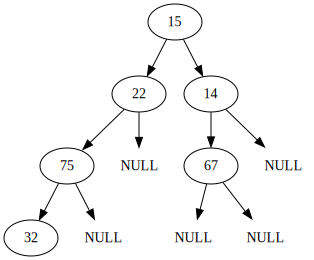
bintree1.completify()print(bintree1.array)[ 15 22 14 75 67 32 -9999 -9999 -9999 -9999 -9999 -9999
-9999 -9999 -9999]display(bintree1.get_digraph_simple())bintree1.array[4]67bintree1.heapify_bottomup(4)display(bintree1.get_digraph_simple())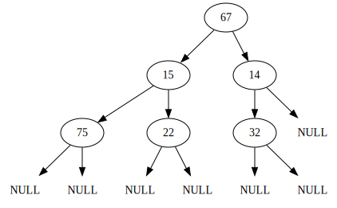
bintree1.heapify_topdown()display(bintree1.get_digraph_simple())
print(bintree1.array)[ 67 75 14 15 22 32 -9999 -9999 -9999 -9999 -9999 -9999
-9999 -9999 -9999]bintree1.array[5]32bintree1.heapify_bottomup(5)display(bintree1.get_digraph_simple())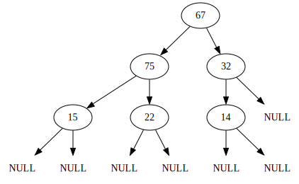
bintree1.heapify_all()display(bintree1.get_digraph_simple())Membangun max heap baru dari awal
arraymaxheap = ArrayMaxHeap(int, 4)arraymaxheap.insert(50)display(arraymaxheap.get_digraph_simple())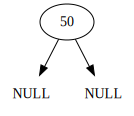
arraymaxheap.insert(40)display(arraymaxheap.get_digraph_simple())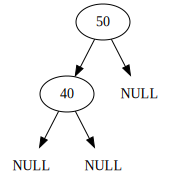
arraymaxheap.insert(70)display(arraymaxheap.get_digraph_simple())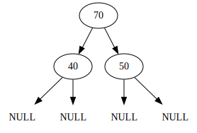
arraymaxheap.insert(45)display(arraymaxheap.get_digraph_simple())
arraymaxheap.insert(60)display(arraymaxheap.get_digraph_simple())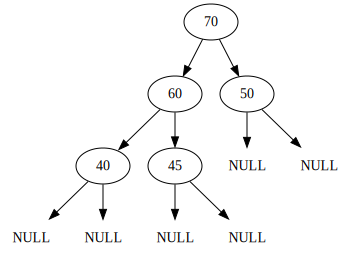
arraymaxheap.delete()70display(arraymaxheap.get_digraph_simple())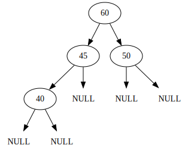
arraymaxheap.delete()60display(arraymaxheap.get_digraph_simple())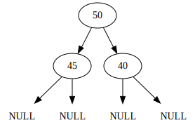
Implementasi Min Heap
Dibandingkan dengan implementasi max heap di atas, hanya dua hal yang perlu diubah untuk memperoleh implementasi min heap:
- Ubah nama
classdariArrayMaxHeapmenjadiArrayMinHeap - Modifikasi deinisi fungsi
is_correct_parent_child_datadi bagian(parent_data >= child_data)menjadi(parent_data <= child_data)(agar menggunakan min heap property daripada max heap property)
class ArrayMinHeap(ArrayBintree):
def __init__(self, dtype, height, emptydata=-9999):
# menggunakan __init__ dari ArrayBintree,
# melalui super() yaitu parent class
super().__init__(dtype, height, emptydata)
# atribut tambahan: banyaknya node yang sudah ada
self.n_nodes = 0
# semua method dari ArrayBintree otomatis sudah terdefinisi
# Memeriksa apakah dua nilai (parent, child) memenuhi min heap property
def is_correct_parent_child_data(self, parent_data, child_data):
if (parent_data <= child_data):
return True
else:
return False
# Membuat binary tree menjadi complete (atau almost complete)
# Idenya, tiap elemen yang bukan "data kosong" harus didempetkan ke kiri
def completify(self):
# Sangat mirip dengan insertion sort, hanya saja syaratnya yang beda
for i in range(self.array_size): # i = 0, 1, 2, ..., n-1
for j in range(i, 0, -1): # j = i, i-1, ..., 2, 1
if ((self.array[j] != self.emptydata)
and (self.array[j-1] == self.emptydata)):
self.array[j-1] = self.array[j]
self.array[j] = self.emptydata
# Setelah selesai, tentukan nilai n_nodes
i = 0
while (i < self.array_size) and (self.array[i] != self.emptydata):
i += 1
self.n_nodes = i
# Pastikan, dari leaf tertentu ke atas, bahwa heap tree memang memenuhi
# heap property
def heapify_bottomup(self, child_idx):
if child_idx > 0:
parent_idx = self.get_parent_idx(child_idx)
if not (self.is_correct_parent_child_data(
self.array[parent_idx], self.array[child_idx]
)): # Jika tidak memenuhi heap property, tukar
temp = self.array[parent_idx]
self.array[parent_idx] = self.array[child_idx]
self.array[child_idx] = temp
# heapify parent nya
self.heapify_bottomup(parent_idx)
def insert(self, newdata):
if self.n_nodes == self.array_size:
print("Error insert: array heap sudah penuh")
else:
self.array[self.n_nodes] = newdata
self.heapify_bottomup(self.n_nodes)
self.n_nodes += 1
# Pastikan, dari atas ke bawah, bahwa heap tree memang memenuhi
# heap property
def heapify_topdown(self, parent_idx=None):
# Awalnya mulai dari root
if parent_idx == None:
parent_idx = 0
# Menentukan yang mana antara left child atau right child yang
# lebih layak menjadi parent
left_idx = self.get_left_child_idx(parent_idx)
right_idx = self.get_right_child_idx(parent_idx)
if ((left_idx != -1) and (right_idx != -1)
and (self.array[left_idx] != self.emptydata)
and (self.array[right_idx] != self.emptydata)):
# Kasus dua child, mana yang lebih layak jadi parent?
# (memperhatikan heap property)
if self.is_correct_parent_child_data(
self.array[left_idx], self.array[right_idx]
): # Jika left child lebih layak, pilih itu
child_idx = left_idx
else:
child_idx = right_idx
elif (left_idx != -1) and (self.array[left_idx] != self.emptydata):
# Hanya satu child yaitu yang kiri, pilih saja
child_idx = left_idx
elif (right_idx != -1) and (self.array[right_idx] != self.emptydata):
# Hanya satu child yaitu yang kanan, pilih saja
child_idx = right_idx
else: # tidak punya child; top down selesai
return
# Kalau child yang dipilih bahkan lebih layak daripada parent sekarang,
# tukar agar heap property menjadi terpenuhi
if self.is_correct_parent_child_data(
self.array[child_idx], self.array[parent_idx]
):
temp = self.array[child_idx]
self.array[child_idx] = self.array[parent_idx]
self.array[parent_idx] = temp
# Lanjutkan heapify pada child tersebut
self.heapify_topdown(child_idx)
# Mengintip apa yang ada di root
def peek(self):
nilai = self.get_root()
if nilai == self.emptydata:
print("Error peek: heap tree sedang kosong")
return None
else:
return nilai
# Delete root
def delete(self):
# 1. Peroleh nilai root untuk di-return
nilai_root = self.get_root()
# Kalau ternyata sudah kosong sebelumnya, tidak ada yang bisa dihapus
if nilai_root == self.emptydata:
print("Error delete: heap tree sudah kosong sebelumnya")
return None
# Kalau tidak kosong, lanjut
# 2. Ganti nilai di root dengan elemen ter-kanan di array
self.set_root(self.array[self.n_nodes-1])
# 3. "Hapus" elemen ter-kanan tersebut
self.array[self.n_nodes-1] = self.emptydata
self.n_nodes -= 1
# 4. Lakukan heapify dari root ke bawah
self.heapify_topdown()
# 5. return nilai yang baru saja dihapus
return nilai_root
# Heapify untuk semua node
def heapify_all(self):
# Periksa dari node ter-kanan hingga node ter-kiri (kecuali root)
for child_idx in range(self.n_nodes, 0, -1): # i = n, n-1, ..., 2, 1
parent_idx = self.get_parent_idx(child_idx)
# Jika heap property tidak terpenuhi, tukar
if not (self.is_correct_parent_child_data(
self.array[parent_idx], self.array[child_idx]
)):
temp = self.array[parent_idx]
self.array[parent_idx] = self.array[child_idx]
self.array[child_idx] = temparrayminheap = ArrayMinHeap(int, 3)arrayminheap.insert(78)display(arrayminheap.get_digraph_simple())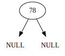
arrayminheap.insert(43)display(arrayminheap.get_digraph_simple())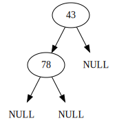
arrayminheap.insert(21)display(arrayminheap.get_digraph_simple())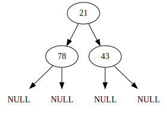
arrayminheap.insert(39)display(arrayminheap.get_digraph_simple())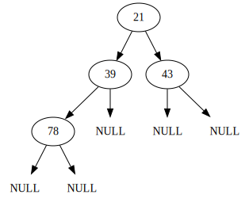
arrayminheap.insert(15)display(arrayminheap.get_digraph_simple())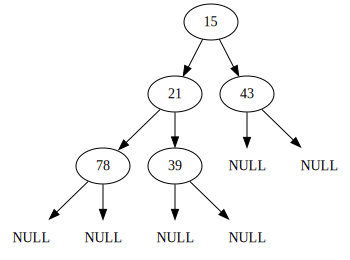
arrayminheap.delete()15display(arrayminheap.get_digraph_simple())arrayminheap.delete()21display(arrayminheap.get_digraph_simple())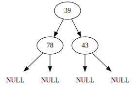
Implementasi AVL/Balance Tree dengan pointer (linked AVL tree)
Implementasi linked AVL tree
class LinkedAVL(LinkedBST):
def __init__(self):
# menggunakan __init__ dari LinkedBST,
# melalui super() yaitu parent class
super().__init__()
def get_node_height(self, node):
if node == None:
return -1
left_height = self.get_node_height(node.left)
right_height = self.get_node_height(node.right)
node_height = 1 + max(left_height, right_height)
return node_height
def get_tree_height(self):
return self.get_node_height(self.root)
def get_balance_factor(self, node):
if node == None:
return 0
left_height = self.get_node_height(node.left)
right_height = self.get_node_height(node.right)
balance_factor = left_height - right_height
return balance_factor
def left_rotate(self, x):
# x
# \
# y
# / \
# S z
y = x.right
S = y.left # left subtree dari y
# rotate
y.left = x
x.right = S
# y
# / \
# x z
# \
# S
# root baru
return y
def right_rotate(self, x):
# x
# /
# y
# / \
# z S
y = x.left
S = y.right # right subtree dari y
# rotate
y.right = x
x.left = S
# y
# / \
# z x
# /
# S
# root baru
return y
# Kali ini insert harus secara rekursif
# agar bisa sekaligus melakukan re-balancing secara bottom-up
def insert(self, newdata):
if self.search(newdata) == None: # jika data belum ada, boleh insert
self.root = self.insert_rec(newdata, current=self.root)
else:
print("Error insert: data sudah ada di AVL tree, yaitu", newdata)
def insert_rec(self, newdata, current):
if current == None:
return BintreeNode(newdata)
elif newdata < current.data:
current.left = self.insert_rec(newdata, current=current.left)
else: # newdata > temp.data
current.right = self.insert_rec(newdata, current=current.right)
cur_BF = self.get_balance_factor(current)
left_BF = self.get_balance_factor(current.left)
right_BF = self.get_balance_factor(current.right)
# re-balancing, bagi kasus tergantung balance factor
if (cur_BF > 1 and left_BF > 0): # RR
# right rotate
return self.right_rotate(current)
elif (cur_BF > 1 and left_BF <= 0): # LR
# left rotate child
current.left = self.left_rotate(current.left)
# right rotate
return self.right_rotate(current)
elif (cur_BF < -1 and right_BF <= 0): # LL
# left rotate
return self.left_rotate(current)
elif (cur_BF < -1 and right_BF > 0): # RL
# right rotate child
current.right = self.right_rotate(current.right)
# left rotate
return self.right_rotate(current)
return current
# Deletion juga secara rekursif
# agar sekaligus melakukan re-balancing secara bottom-up
def delete(self, x):
self.delete_rec(x, current=self.root)
def delete_rec(self, x, current):
if current == None:
return current
elif x < current.data:
current.left = self.delete_rec(x, current=current.left)
elif x > current.data:
current.right = self.delete_rec(x, current=current.right)
else:
if current.left == None:
temp = current.right
current = None
return temp
elif current.right == None:
temp = current.left
current = None
return temp
# TODO
cur_BF = self.get_balance_factor(current)
left_BF = self.get_balance_factor(current.left)
right_BF = self.get_balance_factor(current.right)
# TODO
return currentlinkedavl = LinkedAVL()linkedavl.insert(2)display(linkedavl.get_digraph_simple())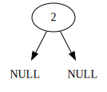
linkedavl.insert(1)display(linkedavl.get_digraph_simple())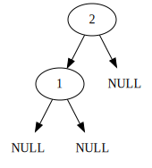
linkedavl.insert(5)display(linkedavl.get_digraph_simple())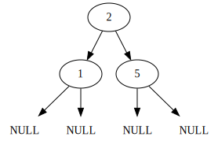
linkedavl.insert(3)display(linkedavl.get_digraph_simple())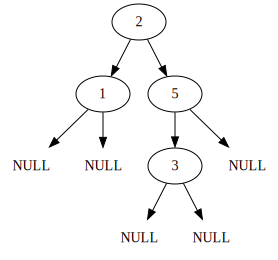
linkedavl.insert(7)display(linkedavl.get_digraph_simple())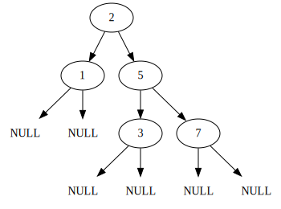
linkedavl.insert(10)display(linkedavl.get_digraph_simple())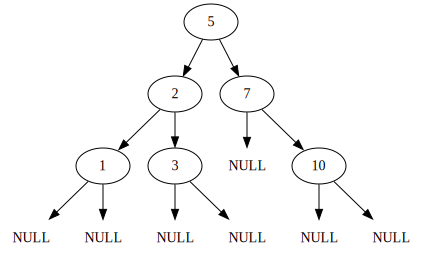
Lampiran kode yang diperlukan dari modul-modul sebelumnya
ArrayBintree dari Modul 8
class ArrayBintree:
def __init__(self, dtype, height, emptydata=-9999):
self.dtype = dtype
self.height = height
self.emptydata = emptydata
self.array_size = 2**(height+1) - 1
self.array = np.empty(self.array_size, dtype=dtype)
for i in range(self.array_size):
self.array[i] = emptydata
def get_root(self):
root_data = self.array[0]
if root_data == self.emptydata:
return None
else:
return root_data
def set_root(self, newdata):
self.array[0] = newdata
def get_data(self, node_idx):
if node_idx < self.array_size:
return self.array[node_idx]
else:
print("Error get_data: indeks di luar ukuran tree")
return None
def set_data(self, node_idx, newdata):
if node_idx < self.array_size:
self.array[node_idx] = newdata
else:
print("Error set_data: indeks di luar ukuran tree")
def get_left_child_idx(self, node_idx):
left_idx = 2*node_idx + 1
if left_idx < self.array_size:
return left_idx
else:
return -1
def get_left_child(self, node_idx):
left_idx = self.get_left_child_idx(node_idx)
if left_idx != -1:
data = self.array[left_idx]
if data != self.emptydata:
return data
else:
return None
else:
return None
def get_right_child_idx(self, node_idx):
right_idx = 2*node_idx + 2
if right_idx < self.array_size:
return right_idx
else:
return -1
def get_right_child(self, node_idx):
right_idx = self.get_right_child_idx(node_idx)
if right_idx != -1:
data = self.array[right_idx]
if data != self.emptydata:
return data
else:
return None
else:
return None
def get_parent_idx(self, node_idx):
if node_idx == 0:
return -1
idx = int(np.floor( (node_idx - 1)/2 ))
return idx
# preorder: tengah, kiri, kanan
def get_preorder(self, current=0, result=None):
is_starting_node = False
if result == None:
is_starting_node = True
result = []
# tengah
current_data = self.array[current]
if current_data != self.emptydata:
result.append(current_data)
# kiri
left_idx = self.get_left_child_idx(current)
if left_idx != -1:
self.get_preorder(current=left_idx, result=result)
# kanan
right_idx = self.get_right_child_idx(current)
if right_idx != -1:
self.get_preorder(current=right_idx, result=result)
if is_starting_node:
return result
# inorder: kiri, tengah, kanan
def get_inorder(self, current=0, result=None):
is_starting_node = False
if result == None:
is_starting_node = True
result = []
# kiri
left_idx = self.get_left_child_idx(current)
if left_idx != -1:
self.get_inorder(current=left_idx, result=result)
# tengah
current_data = self.array[current]
if current_data != self.emptydata:
result.append(current_data)
# kanan
right_idx = self.get_right_child_idx(current)
if right_idx != -1:
self.get_inorder(current=right_idx, result=result)
if is_starting_node:
return result
# postorder: kiri, kanan, tengah
def get_postorder(self, current=0, result=None):
is_starting_node = False
if result == None:
is_starting_node = True
result = []
# kiri
left_idx = self.get_left_child_idx(current)
if left_idx != -1:
self.get_postorder(current=left_idx, result=result)
# kanan
right_idx = self.get_right_child_idx(current)
if right_idx != -1:
self.get_postorder(current=right_idx, result=result)
# tengah
current_data = self.array[current]
if current_data != self.emptydata:
result.append(current_data)
if is_starting_node:
return result
def get_digraph_simple(self):
digraph = gv.Digraph()
for idx in range(self.array_size):
data = self.array[idx]
if data != self.emptydata:
digraph.node("node" + str(idx), label=str(data))
left_idx = self.get_left_child_idx(idx)
right_idx = self.get_right_child_idx(idx)
if left_idx != -1:
digraph.edge("node" + str(idx), "node" + str(left_idx))
if self.array[left_idx] == self.emptydata:
digraph.node("node" + str(left_idx), label="NULL", shape="none")
if right_idx != -1:
digraph.edge("node" + str(idx), "node" + str(right_idx))
if self.array[right_idx] == self.emptydata:
digraph.node("node" + str(right_idx), label="NULL", shape="none")
return digraphBintreeNode, LinkedBintree, LinkedBST dari Modul 8
class BintreeNode:
def __init__(self, data, left=None, right=None):
self.data = data
self.left = left
self.right = rightclass LinkedBintree:
def __init__(self):
self.root = None
def is_empty(self):
if self.root == None:
return True
else:
return False
def get_root_data(self):
if self.is_empty():
print("Error get_root_data: tree sedang kosong")
return None
else:
return self.root.data
def set_root_data(self, newdata):
if self.is_empty():
self.root = BintreeNode(newdata)
else:
self.root.data = newdata
# preorder: tengah, kiri, kanan
def get_preorder(self, current=None, result=None, get_addresses=False):
is_starting_node = False
if result == None:
is_starting_node = True
result = []
current = self.root
if current != None:
# tengah
if (not get_addresses):
result.append(current.data)
else:
result.append(current)
# kiri
if current.left != None:
self.get_preorder(current.left, result=result)
# kanan
if current.right != None:
self.get_preorder(current.right, result=result)
if is_starting_node:
return result
# inorder: kiri, tengah, kanan
def get_inorder(self, current=None, result=None, get_addresses=False):
is_starting_node = False
if result == None:
is_starting_node = True
result = []
current = self.root
if current != None:
# kiri
if current.left != None:
self.get_inorder(current.left, result=result)
# tengah
if (not get_addresses):
result.append(current.data)
else:
result.append(current)
# kanan
if current.right != None:
self.get_inorder(current.right, result=result)
if is_starting_node:
return result
# postorder: kiri, kanan, tengah
def get_postorder(self, current=None, result=None, get_addresses=False):
is_starting_node = False
if result == None:
is_starting_node = True
result = []
current = self.root
if current != None:
# kiri
if current.left != None:
self.get_postorder(current.left, result=result)
# kanan
if current.right != None:
self.get_postorder(current.right, result=result)
# tengah
if (not get_addresses):
result.append(current.data)
else:
result.append(current)
if is_starting_node:
return result
# berdasarkan algoritma preorder traversal :D
def get_digraph_simple(self, current=None, node_name=None, result=None):
is_starting_node = False
if result == None:
is_starting_node = True
result = gv.Digraph()
current = self.root
node_name = "root"
if current != None:
# tengah
result.node(node_name, label=str(current.data))
# kiri
left_name = node_name + "->left"
result.edge(node_name, left_name)
self.get_digraph_simple(
current=current.left, node_name=left_name, result=result
)
# kanan
right_name = node_name + "->right"
self.get_digraph_simple(
current=current.right, node_name=right_name, result=result
)
result.edge(node_name, right_name)
else:
result.node(node_name, label="NULL", shape="none")
if is_starting_node:
return resultclass LinkedBST(LinkedBintree):
def __init__(self):
# menggunakan __init__ dari parent class,
# melalui super() yaitu parent class
super().__init__()
# semua method dari LinkedBintree otomatis sudah terdefinisi
# cari elemen di BST
def search(self, x):
temp = self.root
while (temp != None):
if x == temp.data:
return x
elif x < temp.data:
temp = temp.left
else:
temp = temp.right
return None
# insertion
def insert(self, newdata):
if self.root == None:
self.root = BintreeNode(newdata)
return
temp = self.root
while (temp != None):
if newdata == temp.data:
print("Error insert: data sudah ada di BST, yaitu", newdata)
return
elif newdata < temp.data:
if temp.left == None:
temp.left = BintreeNode(newdata)
return
else:
temp = temp.left
else: # newdata > temp.data
if temp.right == None:
temp.right = BintreeNode(newdata)
return
else:
temp = temp.right
# deletion
def delete(self, x, inorder_pred=False):
if self.is_empty():
print("Error: BST kosong")
return
prev = self.root
turn = ""
if x < prev.data:
if prev.left == None:
print("Error delete: tidak ditemukan data yang bernilai", x)
return
else:
temp = prev.left
turn = "left"
elif x > prev.data:
if prev.right == None:
print("Error delete: tidak ditemukan data yang bernilai", x)
return
else:
temp = prev.right
turn = "right"
else:
temp = prev
while (temp != None):
if temp.data == x:
break
elif x < temp.data:
if temp.left == None:
print("Error delete: tidak ditemukan data yang bernilai", x)
return
else:
prev = temp
temp = temp.left
turn = "left"
else: # x > temp.data
if temp.right == None:
print("Error delete: tidak ditemukan data yang bernilai", x)
return
else:
prev = temp
temp = temp.right
turn = "right"
# kasus 0 children
if (temp.left == None) and (temp.right == None):
if turn == "left":
prev.left = None
elif turn == "right":
prev.right = None
del temp
return
# kasus 1 child, di kiri
elif (temp.left != None) and (temp.right == None):
if turn == "left":
prev.left = temp.left
elif turn == "right":
prev.right = temp.left
del temp
return
# kasus 1 child, di kanan
elif (temp.left == None) and (temp.right != None):
if turn == "left":
prev.left = temp.right
elif turn == "right":
prev.right = temp.right
del temp
return
# kasus 2 children
elif inorder_pred: # metode inorder predecessor (left subtree)
inorder_left = []
self.get_inorder(current=temp.left, result=inorder_left)
replacement = inorder_left[-1] # elemen terakhir
self.delete(replacement, inorder_pred=inorder_pred)
temp.data = replacement
return
else: # metode inorder successor (right subtree)
inorder_right = []
self.get_inorder(current=temp.right, result=inorder_right)
replacement = inorder_right[0]
self.delete(replacement, inorder_pred=inorder_pred)
temp.data = replacement
return